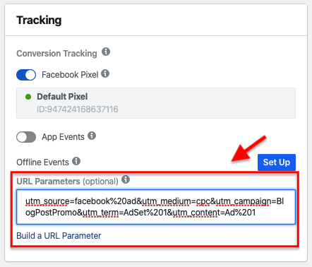

Summary of marketing analytics
Table of Contents
1. Platforms to use
1.1. CRM (Customer relationship management)
A great platform that can hold data for your customers for a long time, good for long purchase cycles.
1.2. Tag Manager Platform
- Tag manager platform like Google tag manager
Each platform that collect data about your client require you to insert a code into your website.
This data collection allows for campaign performance tracking, but each code added make your website slower.
The solution is a platform that you only need to insert their code into your website, and insert other platforms codes into it.
This platform is called a tag manager, a famous example would be Google Tag Manager.
- There are two things to set up in Google Tag Manager.
- A tag, which is the code that you are asked to insert in your website by platforms that track campaign/website performance.
- A trigger, that accompany each tag and tell the tag manager platform what action need to be taken by the client on the website inorder to fire up a tag and send the data to a tracking platform.
- A tag, which is the code that you are asked to insert in your website by platforms that track campaign/website performance.
- There are two things to set up in Google Tag Manager.
1.3. Ads Manager
- Ad manager is a place where you set up ads, it reports a good data about your client actions within Facebook, but not within your business funnel.
Example of a reporting on diffirent platform for a funnel that uses facebook ads and email marketing.
- Klaviyo (email marketingplatform) report that 756 people register.
- Facebook report that, 1249 people register. Ads were run on Facebook to bring awareness and following that up with an email that set the deal, but Facebook miss allocate clicks.
Not only Facebook takes credit for what email marketing did, but it also overestimates the amount of people who register.
- Web analytic report is closer to what is shown in Klaviyo, reporting 789 user.

- Klaviyo (email marketingplatform) report that 756 people register.
- Best way to track ads is using URL dynamic parameters
URL dynamic parameters are text that is added to the end of your URL, that dont change the URL direction, where thay can dynamicly change base on an ad parameter.
- Some URL dynamic parameters are:
- ad_id={{ad.id}}
- adset_id={{adset.id}}
- campaign_id={{campaign.id}}
- ad_name={{ad.name}}
- adset_name={{adset.name}}
- campaign_name={{campaign.name}}
- ad_id={{ad.id}}
- URL dynamic parameter can be setup in the ad setup section in your ad manager
example: utm_source=facebook&utl_meduim=cpc&utm_term={{adset.name}}&utm_content={{ad.name}}&utm_campaign={{campaign.name}}

- Some URL dynamic parameters are:
1.4. Event manager
An event manager is a place where you decide how and what data it will be gathered using, for example on Facebook, Facebook pixel or Facebook conversion API, to later be used in tracking campaign performance.
- What event are we tracking on our website
- Page views
- Optins (people who show an intrest in a product)
- Add to cart
- Sales
- Page views
- Tracking standard events, it is done by sending back to facebook a snnipit of code when an event happend
https://www.facebook.com/business/help/402791146561655 - Tracking custom events, Custom conversion.
If your business have a unique model, and you want to optimize your campaign for a certain button click or a certain page view.
We can use a Facebook tool on our website to get the current code block for our custom conversion and add it in our event manager to help facebook optimize the campaigns for your goal.
https://www.facebook.com/business/help/777099232674791
1.5. Conversion API
It is a way to send the client action or behavior in your website directly back to Facebook, by passing the browsers and persimmon, but it can lead to duplicate tracked events.
1.6. Web analytics
A web analytic platform record the traffic of your website to be used later on to track a campaign success.
An example is analyzing URLs that have dynamic parameters, or analyzing unique page views can be used to represent individual actions, which is an alternative measurement if events weren't setup in your event manager.
2. Campaigns
2.1. Purpose of ad campaigns:
- Awareness campaign is for making the people aware of the product/service.
- Evaluating campaign is for making pre-aware people evaluate the product/service.
- Conversion campaign is for making the people that had evaluated the product/service make an action in your site, whether it is a purchase or an opt-in.
- Retention campaign is for making the people who purchased or opted-in engaged.
2.2. Purchase cycle
The purchase cycle is the period between when someone sees an ad campaign and makes a purchase. The period is short when the product is cheap and long when it is expensive.
When the period is so long, we may not know which ad campaign brought the client because some ad platform only hold data on non buying client for 180 days. Link to facebook article
Which mean that if someone saw an ad campaign about an expensive product, decided to save money and then buy after more than 180 days, we cannot know what ad campaign brought that person to save up and buy on Facebook.
- One solution for long purchase cycle is:
- Using a CRM
- make an ad campaign that encourage people to take a quiz and give their email.
- Keep a database of what ad campaign brought what email.
- If a person decided to buy, he/she will use an email.
- Match the email that a person bought from the emails in your database and determine what campaign that person came from.
- Using a CRM
3. Tracking
3.1. Why do we track
- We track ad campaign performance to know:
- What ad campaign, that is currently in the testing phase, performed well, and it is more likely to generate revenue if we scale it (invest more money in promoting it).
- What ad campaign, that is currently in the scaling phase, performed poorly, and we need to stop scaling it.
- What ad campaign, that is currently in the testing phase, performed well, and it is more likely to generate revenue if we scale it (invest more money in promoting it).
3.2. How do we track
We track campaign using unique coupons, phone number to call, and URL for each ad campaign.
- Coupons
- Phone numbers
- Dynamic urls
URL dynamic parameters are text that is added to the end of your URL, that dont change the URL direction, where thay can dynamicly change base on an ad parameter.
- Some URL dynamic parameters are:
- ad_id={{ad.id}}
- adset_id={{adset.id}}
- campaign_id={{campaign.id}}
- ad_name={{ad.name}}
- adset_name={{adset.name}}
- campaign_name={{campaign.name}}
- ad_id={{ad.id}}
- URL dynamic parameter can be setup in the ad setup section in your ad manager
example: utm_source=facebook&utl_meduim=cpc&utm_term={{adset.name}}&utm_content={{ad.name}}&utm_campaign={{campaign.name}}
- Some URL dynamic parameters are:
3.3. How do we evaluate performance
- we using certain metrics for each campaing type:
- Awareness campaign
- Cost per video view
\[\frac{\text{Spend}}{\text{3-second video views}}\] - Cost per messenger signup
\[\frac{\text{Spend}}{\text{Messenger signups}}\]
- Cost per video view
- Evaluating campaign
- Click through rate (Unique link clicks count when people visit your website as well as your facebook page, in facebook it is better to use Unique outbound clicks)
\[\frac{\text{Unique link/outbound clicks}}{\text{Impression}}\] - Cost per click
\[\frac{\text{Spend}}{\text{Unique link clicks}}\] - Quality engagment rate/ conversion rate ranking
- Cost per lead
\[\frac{\text{Spend}}{\text{Leads}}\] - Lead from conversion rates
\[\frac{\text{Leads}}{\text{Lead form visitors}}\]
- Click through rate (Unique link clicks count when people visit your website as well as your facebook page, in facebook it is better to use Unique outbound clicks)
- Conversion campaign
- Cost per aqqusition
\[\frac{\text{Spend}}{\text{Customers created}}\] - Revenue per visitor
\[\frac{\text{Revenue}}{\text{Unique link clicks}}\] - Return on investment
\[\frac{\text{Revenue - Spend}}{\text{Spend}}\] - Sales funnnel performance
\[\frac{\text{Step completers}}{\text{Step visitors}}\]
- Cost per aqqusition
- Retention campaign
- Return on investment (7 days, 30 days)
\[\frac{\text{Revenue - Spend}}{\text{Spend}}\] - Lead and customer value over time
\[\mu_{\text{Revenue by first optin/purchase}}\]
- Return on investment (7 days, 30 days)
- Awareness campaign
3.4. What action we take after calculating a metrics
3.5. What actions we take after calculating a metrics
- There are metrics that are locked in-platform, we dont have the data to calculate them ourselfs, These metrics are ;CPVV(cost per video view), CPMS(cost per messenger signup), CTR(click throu rate), relevance score.
- When an action is taken: When CPVV, CPMS, or CTR are high or when relevance score is low.
- What action to take: Change the creative
- When an action is taken: When CPVV, CPMS, or CTR are high or when relevance score is low.
- CPL(cost per lead), lead form conversion rated
- When an action is taken: CPL, lead form conversion rated are high
- What action to take: Somethign in the ad dosent align on what the business serve
- When an action is taken: CPL, lead form conversion rated are high
- CPA(cost per accuisition), RPV(revenue per visitor), ROI(return on investment)
- When an action is taken: When CPA is high or RPC or ROI are low.
- What action to take:
- Evaluate the sales funnel:
- Analyzing heatmaps on key pages
- Analyzing conversion rate on each stage of the funnel to find where customers drop off
- Analyzing heatmaps on key pages
- Evaluate if the offer is good for customers
- Disregard low ROI: Lead and customer value over time advanced
- disregard ROI if it is neative because you know what a customer is worth over time.
- disregard ROI if it is neative because you know what a customer is worth over time.
- Evaluate the sales funnel:
- When an action is taken: When CPA is high or RPC or ROI are low.
3.6. Evaluating within ad platform
- Why cant we relly on just ad platform to see the ad performance, Nope.
Post IOS14, we can only track, with accuracy, the activity of people who views our ad within Facebook itself.
For example, track exactly how many seconds a person watch out ad video.
Ad platform lost the ability to follow what a client is doing inside our website.
And besides, Facebook doesn't know your entire marketing funnel, you can do email marketing alongside Facebook ads, and Facebook cannot tell whether the result come only from Facebook ads or email marketing.
- If we run an ad campaign on Facebook, an ad can:
- Bring awareness and help an email marketing campaign to close the deal, in this case the email marketing platform and Facebook will both want to take the credit.
But the email marketing deserve the credit, but we will also want to consider what exact Facebook ad campaign helped to scale them both. - Bring awareness and encourage a potential client to do research on Google and then access your website and make a purchase from there, in this case both Facebook and Google will want to take the credit.
But only Facebook deserve the credit.
- Bring awareness and help an email marketing campaign to close the deal, in this case the email marketing platform and Facebook will both want to take the credit.
- If we run an ad campaign on Facebook, an ad can: